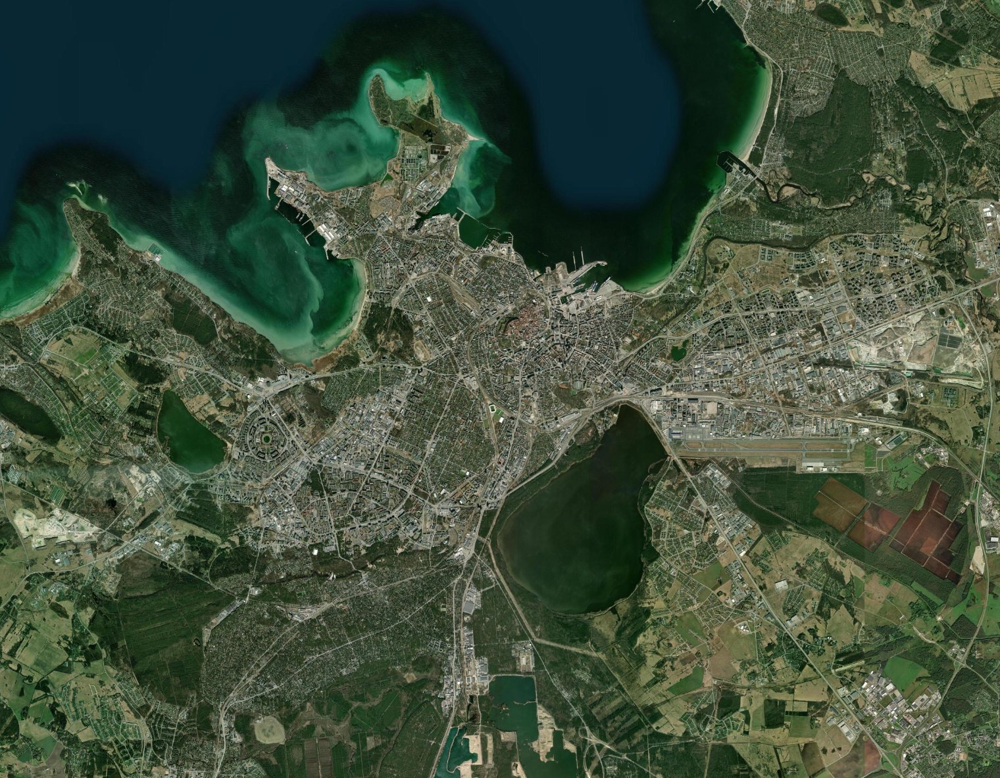

| Aadress | Puud | Põhjus | Väärtusklass | Otsus | Kuupäev | Lingid |
|---|---|---|---|---|---|---|
| Andmed laaditakse… | ||||||

Andmed pärinevad Tallinna Raielubade infosüsteemist raie.tallinn.ee, mida haldab Tallinna Linnavalitsus (linna digiteenistus). Iga loa juures on link algsele otsusele.
Aadresside geokodeerimine (kaardi- ja Google Street View lingid) toimub Maa-ameti tasuta avaliku aadressiteenuse (In-ADS) kaudu.
Loa taotleja nime register avalikult ei näita — seda välja hoitakse andmestruktuuris tühjana. Loa väljaandja on otsuse teinud linnaosa valitsus.
Andmed uuenevad automaatselt iga tunni tagant (uued otsused, väärtusklass ja koordinaadid); viimase uuenduse aeg on kirjas ülal paremas nurgas. "Telli teavitus" all saab valida oma kriteeriumitele (puuliik, põhjus, linnaosa, läbimõõt, asukoha raadius) vastavate uute otsuste kohta e-posti teavituse.
Puu väärtusklass (I–V) on toodud otsuse detailvaates raie.tallinn.ee lehel, aga ainult teatud tüüpi otsuste (peamiselt ehitusealune raie ja sanitaarraie) puude tabelis — ohtliku puu/oksa otsustel seda välja pole. Rakendus loeb väärtusklassi iga otsuse detailvaatest ja kuvab kõrgeima (halvima) leitud väärtusklassi; kui otsuse tüübil seda välja pole, jääb veerg tühjaks. Dendroloogi (hindaja) nime raie.tallinn.ee praegu avalikult ei näita — see väli jääb seetõttu tühjaks, kuni allikas selle info avalikustab.
Kaart kuvab aerofoto hetktõmmise (Esri/ArcGIS World Imagery), millele on lisatud raielubade asukohad. See uuendatakse andmete värskendamisel; klõpsates täpil avaneb sama koha reaalne Google Street View.
Ajalugu: Load vaates saab otsuse kuupäeva järgi filtreerida tagasiulatuvalt kuni 2020. aasta alguseni (kokku ligi 18 700 otsust). Need vanemad otsused pärinevad raie.tallinn.ee nimekirjavaatest ning ei sisalda algselt puu läbimõõtu. Aadresside asukoht (GPS-koordinaadid) leitakse eraldi Maa-ameti aadressiteenusega ja lisatakse andmetele järk-järgult — otsus, mille aadressi pole veel geokodeeritud, ei ilmu Kaardile ega raadiuse-otsingusse, kuid link algsele otsusele ja aadressipõhine Google Mapsi otsing on igaühe juures olemas.